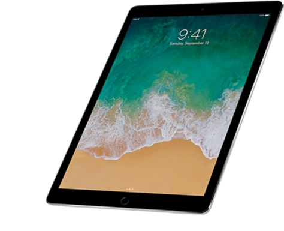
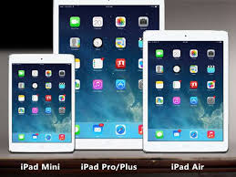
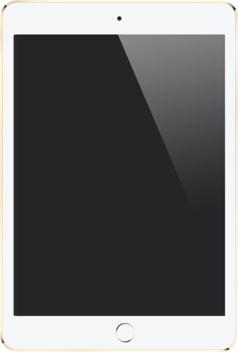

What is an iPad
The iPad is a line of tablet computers designed, developed and marketed by Apple. It runs the IOS mobile operating system. The first iPad was released on April 3, 2010. An iPad can shoot video, take photos, play music, and perform Internet functions such as web-browsing and emailing. There are 4 types of iPads, the regular, the iPad Air, the iPad Mini, and the iPad Pro.


Side
History of the iPad
- The iPad was announced on January 27, 2010, by Steve Jobs at an Apple press conference at the Yerba Buena Center for the Arts in San Francisco.
- Apple began taking pre-orders for the first-generation iPad on March 12, 2010.
- Jobs unveiled the iPad 2 at a March 2, 2011, press conference. It was about 33% thinner than its predecessor and 15% lighter.
- On October 23, 2012, Apple announced the fourth generation iPad and also announced the iPad Mini, with a screen measuring 7.9 inches, it is aimed at the emerging sector of smaller tablets such as the Kindle Fire and Nexus 7.
- On October 23, 2012, Apple announced the fourth generation iPad and also announced the iPad Mini, with a screen measuring 7.9 inches, it is aimed at the emerging sector of smaller tablets such as the Kindle Fire and Nexus 7.
- On October 22, 2013, Apple introduced the fifth generation of iPad, called the iPad Air, as light as the mini but as big as the normal iPad, and the second generation of iPad Mini.
- In September 2015, the iPad Pro was announced, which included a 12.9-inch screen
| iPad (1st generation) | iPad (2nd generation) | iPad (3rd generation) | iPad (4th generation) | iPad Air (1st generation) | iPad Air (2nd generation) | |
|---|---|---|---|---|---|---|
| Picture |  |
|
|
 | ||
| Announcment Date | January 27, 2010 | March 2, 2011 | March 7, 2012 | October 23, 2012 | October 22, 2013 | October 16, 2014 |
| Release Date | April 3, 2010 | March 11, 2011 | March 16, 2012 | November 2, 2012 | November 1, 2013 | October 22, 2014 |